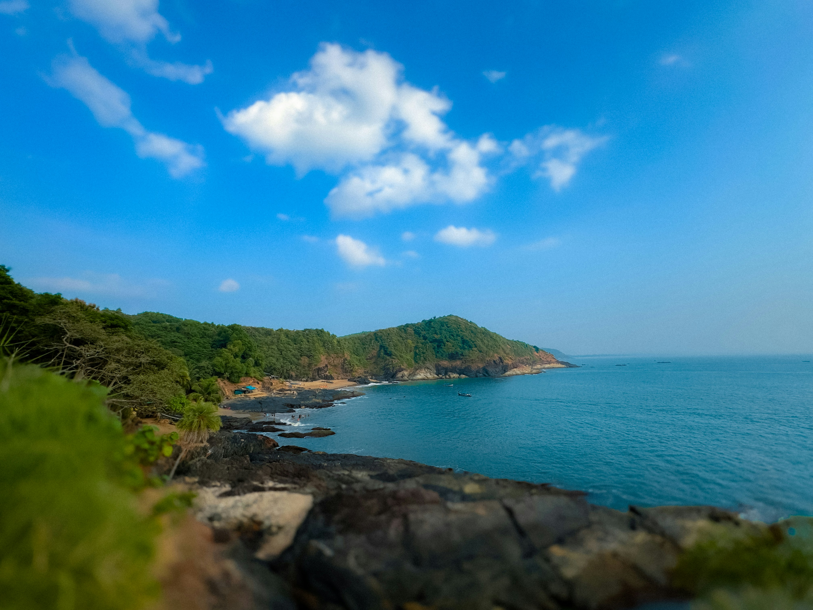
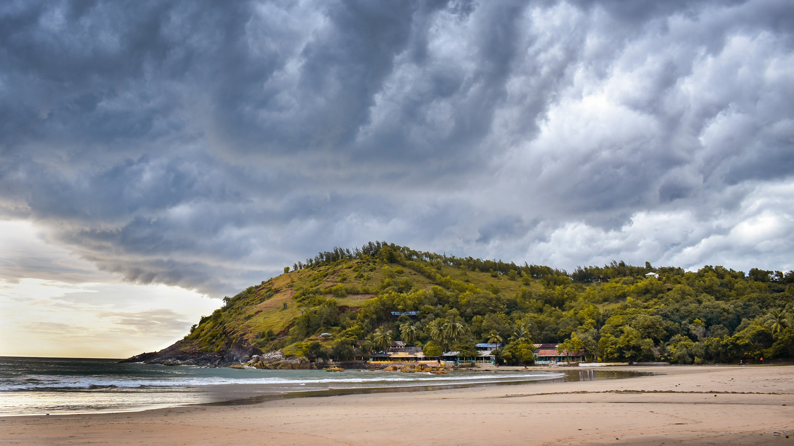
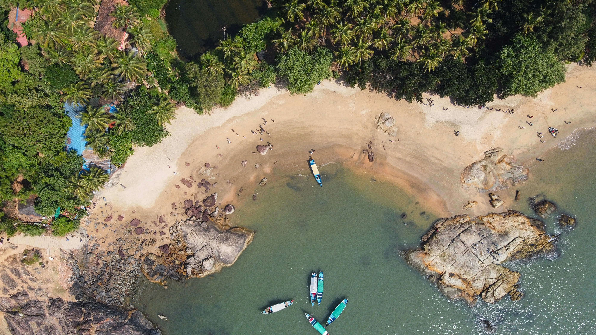
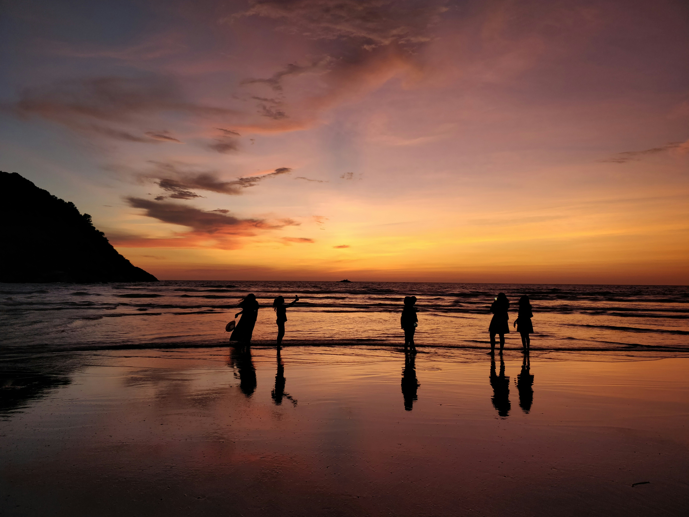

Gokarna Trip Planning Guide: Everything You Need To Know Before You Visit
Best time to visit, how many days to stay, where to stay, how to reach, what to pack, a 3-day itinerary, and planning mistakes to avoid.
Gokarna travel blog
Read practical, story-led guides to Gokarna's history, temples, beaches, local culture, and curated trip ideas.
Latest guides
This page will collect every Discover Gokarna blog we publish, from cultural explainers to weekend planning notes.

Best time to visit, how many days to stay, where to stay, how to reach, what to pack, a 3-day itinerary, and planning mistakes to avoid.

Weather, beaches, waterfalls, Yana Caves, Mirjan Fort, safety, packing, activities, and travel tips for a Gokarna monsoon trip.

Understand how Gokarna became both a sacred Shiva pilgrimage town and a slow-travel beach destination.

A practical guide to Gokarna Main Beach, Kudle Beach, Om Beach, Half Moon Beach, and Paradise Beach.

Choose between winter beach days, monsoon greenery, summer budget travel, temple visits, treks, cafes, and workations.